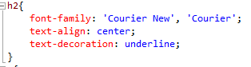
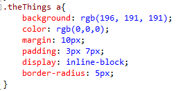

Most of my research this month was on how HTML and CSS worked together and how I could do build a website from them. I learned the basics of HTML and its syntax. Once I figured out how HTML worked, I built the website and ended up looking like it was a website that was made prehistoric. So I started learning the basics of CSS, enough to know how to design a website to make it look more modern. It was also necessary to design the home page of the project. HTML uses elements, which are comprised of opening tags and closing tags. For example <p> is a tag representing a paragraph tag where we can write a paragraph text and <p> This is a paragraph <p> is an element that has an opening tag <p> and closing tag </p> where “/” means closing. Each element must have an opening and an optional closing tag. Each website contains a head and a body class (<head> and <body> respectively) which can have a variety of elements ranging from paragraphs to headers, which is different from head, to tables to linking photos or text to other websites or parts on the website and more. CSS styles the website, making it more modern-looking. We can style all the paragraph elements or all divider classes to style the website until you get a desirable result. We can style the website by changing font size, color, weight (meaning how bold it is), position, and more.
For example, the sample code-from my website-from above changes all <h2> elements (or level 2 heading) in a HTML document to the following code. By using font-family, the font changes fromt the default font (Times New Roman) to Courier New or Courier, depending on what the computer or browser supports. It also makes the text appear to be in the center of the window by using text-align. We can also change how text looks by underlining, adding border line, and more by using text-decoration.
In the code above, I am changing the style of the links, which is represented by <a> in HTML and why there is an a after ".theThings", on tabs on top of the page, which I named "theThings". In it I am changing the background to grey , which can be changed by changing the amount of red, green, and blue shown on the screen or rgb. I also changed the font color, throught "color:", to black through the same process. I also gave the rounded corners through "border-radius:". "display: inline-block" treats the tabs as if they are in the same line instead of putting them in seperate lines. Padding changes how much space I want between the the text and the border, in this case the border is a outline of the tab, and margin changes how much space I want between the border and anything outside.
These are just a handful of ways to design any webiste. We could change how the link looks like when the mouse hover over it or where exactly I want to position my image or text. For my website, I wanted to keep the style simple and easy to use for anyone viewing my webiste and not make it as fancy as most companies will do
In addition to learning HTML and CSS, I found a website that shows me how I could utilize web socket capabilities by using libraries in Java instead of using C or JavaScript (Here is the Link), although I may need to know JavaScript enough to change any settings such as turning on or off anything within the project, and all I need to do was to learn more about what those libraries do and how I could utilize those. I also have to use a different IDE (Net Beans) so that I could use some of those libraries and it is also what the website used to demonstrate these libraries. Net beans also has a simple to use GUI which will help with what the project will look like as I am going through building it. So instead of building a new Web socket, I will be using libraries to implement what I need to a web socket connection.
I am progessing though my timeline as planned and got to learn more about what goes into a website. I also got some insight into how servers and computers communicate. However, I still need to get a better understanding of how servers and computers work with each other so that I can clearly explain how that happens. I also need to start asking my advisors any questions that could impact my progress so that I don't have spend time figuring how I could fix the problem. My website looks too basic for a company website, so I will be making some improvements latter though the year. I also may be ahead my timeline since I started learning how computers and servers communicate, which could leave some space for me to write some more code and improvements
The first couple days of November was to research on how to use Netbeans and its GUI (graphical user interface). The GUI works by dragging and dropping items such as a text box or buttons onto an area where the viewer will see. Netbeans also has an intuitive UI where it has auto complete and some keyboard shortcuts that make building code more quickly and efficiently. I also tried to use Netbeans to make a simple program that converts yards to meters so that I can refresh my Java skills. After I finished learning how to use Netbeans, I started working on getting the code from oracle that shows how to use websockets. For their example, there is a UI where we can imput devices on it and see if they are on or off and change that device to either turn on or off. However I ran into a couple problem. One of the problems that the glassfish server would not even start because it would not find the target. I tried giving it a different target but it also kept giving me the same error. But when I changed it to a blank target and the defaults it was giving and the server started. I tried doing research on what the target does and I still have not found the answer to that. I even asked my advisors what difference it made and they dont know either. The other problem I ran into was when I ran the example code, it would not show current devices listed right after I add the device. I tried debugging code on the java and javascript files and they all ran as it should. The issue was when I had a different file name than the example code had and I had to change the path of the new websocket to the exact file name I have. I also had my advisor explain to me computers and servers work together to send and retrieve data from a server.